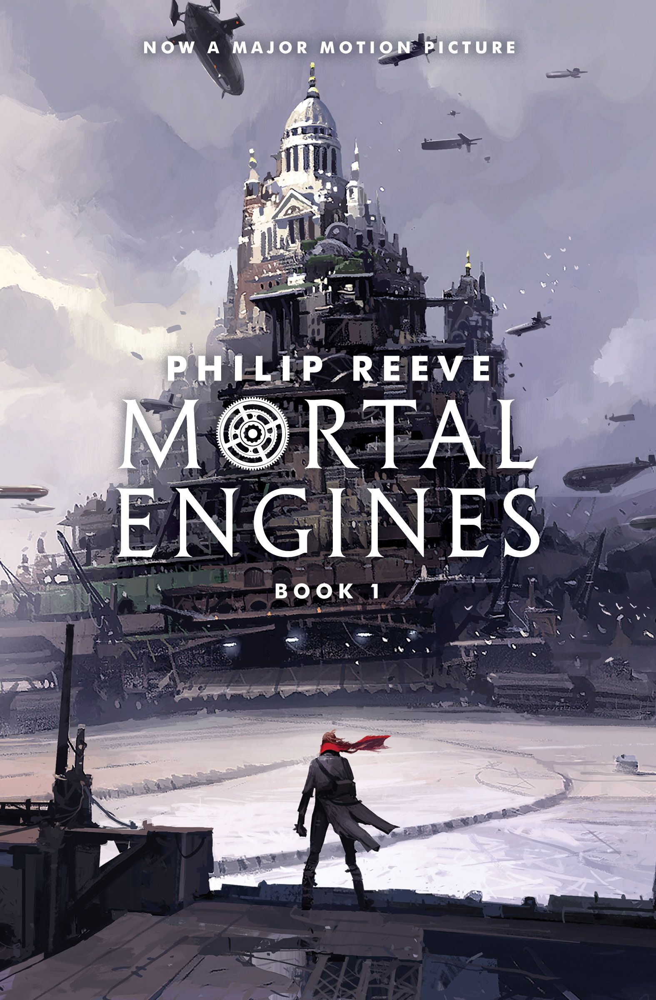
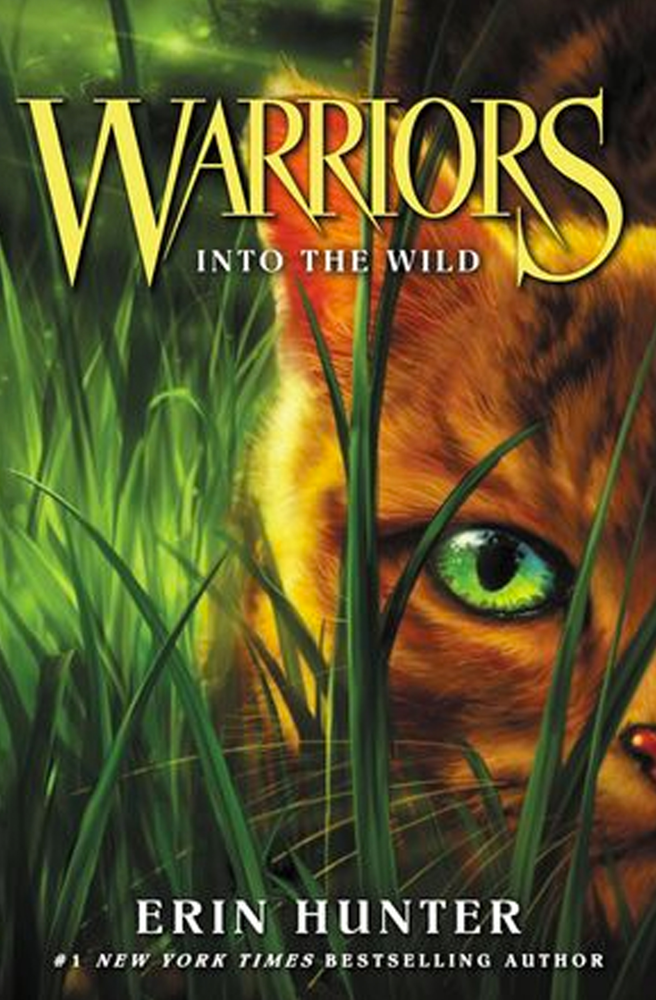

| Bild | Namn | Länk |
|---|---|---|
|  |
Mortal Engines (part of a series), by Philip Reeve In Philip Reeve's steampunk world of moving cities, Tom Natsworthy, a boy from London, meets Hester Shaw, a girl who seems to know more about the moving cites than he does. Togteher they try to find their way back to London, after some unwanted circumstance, Tom to find out the truth, and Hester to get revenge on the man who killed her parents. There are in total four books in the Mortal Engines book series. Only the first one has a movie. |
https://www.wahlstroms.se/bok/de-vandrande-staderna/ |
|  |
Warriors Into the Wild (part of a series), by Erin Hunter Rusty is a tame cat, until he one day finds a tribe of wild cats in the forest and his whole life gets turned upside down. Betrayal, conspiricy and brutal conflicts. Into the Wild is the first book in the second series ("The Prophecies Begin") out of 7, in Erin Hunter's universe "Warriors". |
https://warriorcats.com/books/into-the-wild |
 |
A Court of Thorns and Roses, by Sarah J. Maas No description yet. |
https://libris.kb.se/dxq2njkq01ddmv8 |